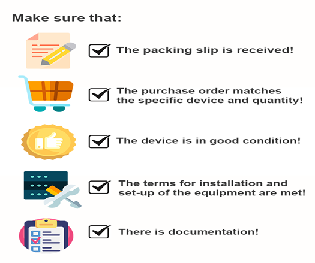
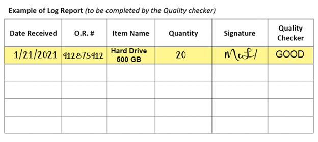
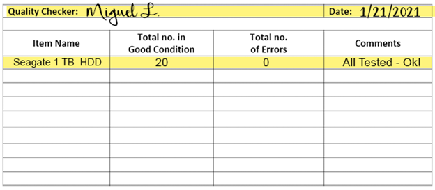
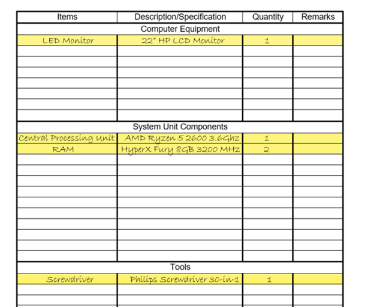

INTRODUCTION
Standards are sets of rules that outline specification of dimensions, design of operation, materials, and performance. Standards provide basis for good quality and protocol.
When it comes to computer systems servicing, standards are important as it serves as comparison for computer performance. Maintaining quality is important to manage customer satisfaction where the revenue and profits will depend upon.
In computer systems servicing, you will be handling a lot of equipment. You will be purchasing them, assembling, and disassembling, repairing, or even maintaining them!
That is why it is important to assess the quality of the materials you will be receiving especially when you are purchasing from a supplier.
Here are some standard protocols in checking the materials and goods you will be receiving in work.

Here are some samples of log reports and documentation assessed by a quality checker.
Take note however, that not all organizations will make use of the same form.


Here is an example of an inventory form.
You will be encountering this after disassembling computers. You will be listing down the PC specifications in this form.
You can write the general description of what the item is under Items while you can write the specifications or necessary description below Description/Specification. Anything else that you think are important notes should be written on the Remarks column.
